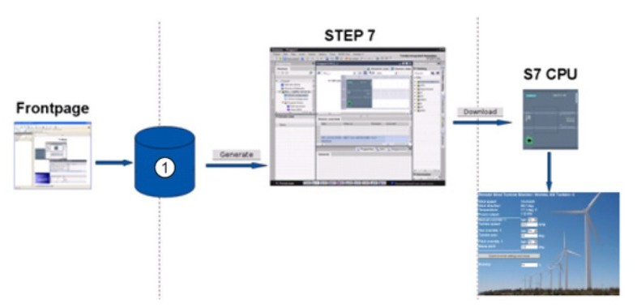

用户定义的 Web 页面
S7-1200 Web 服务器还提供了一些方法，创建可融入 PLC 数据的应用特定的 HTML 页面。
可以选择相应的 HTML 编辑器来创建用户定义的 Web 页面，然后从可通过标准 Web 页面菜单访问的位置将这些页面下载到 CPU。 该过程涉及到以下几项任务：
- 使用 HTML 编辑器（如 Microsoft Frontpage）创建 HTML 页面。
- 将 AWP 命令包含在 HTML 代码的 HTML 注释中：AWP 命令是西门子提供用于访问 CPU 信息的固定命令集。
- TIA Portal 中组态自定义页面
- 基于 HTML 页面生成块
- 编程设计，以控制 HTML 页面的使用
- 编译程序块并将其下载到 CPU
- 访问用户定义的 Web 页面
该过程的如图 1 所示：

①具有嵌入式 AWP 命令的 HTML 文件
图 1.用户定义的 Web 页面执行过程
用户自定义 Web 页面使用过程链接集合
创建 HTML 页面
AWP 命令
读取变量
写入变量
组态
WWW 指令
下载
访问